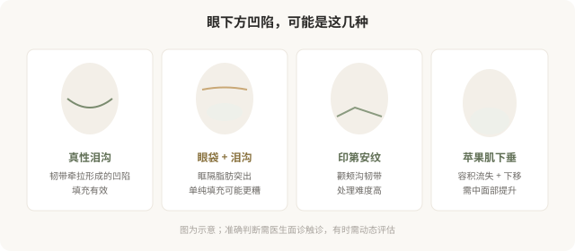

先说结论：泪沟和苹果肌注射能改善眼周的疲惫感，但眼周是面部最精细、最不宽容的注射区域。皮肤薄、血管密集、稍有差池就会出现透光、结节、不平整甚至血管问题。而且“眼下方凹陷”未必都是泪沟——可能是苹果肌下垂、印第安纹、眶隔脂肪突出等不同原因，处理方式完全不同。分清是真泪沟还是其他问题，比直接填更重要。
“眼下方凹陷”先分清是什么

真性泪沟
真性泪沟是眼眶下缘内侧的凹陷，与眼眶内侧的泪沟韧带牵拉有关。它的特点是沿眼眶下缘走行的条状凹陷，在光线侧面照射时更明显。透明质酸填充对真性泪沟效果较好——但要点是：用柔软的小粒径产品、注射在恰当层次（通常是骨膜上深层为主）、剂量克制。
泪沟注射的常见问题：
- 透光（丁达尔效应）：材料太浅或皮肤太薄，出现蓝色反光。
- 不平整、结节：层次和剂量问题。
- 水肿：泪沟区域容易因材料吸水出现反复肿胀，尤其低粘弹性产品。
- 血管风险：眼周血管丰富，栓塞性并发症虽罕见但严重（与鼻部同属眼周高危区）。
眼袋 + 泪沟
如果“眼下方鼓”主要是眼袋（眶隔脂肪突出）造成的，单纯填泪沟可能让鼓更明显——填充物叠加在脂肪突出下方，反而加重臃肿感。这种情况需要先判断眼袋的处理方式（手术去除或针对性方案），而不是想当然地填泪沟。
印第安纹
印第安纹是颧颊部位的斜行沟壑，与颧弓皮肤支持韧带有关。它比泪沟难处理，单纯填充效果有限、风险较高，需要医生有经验判断是否适合填充、用何种方式。
苹果肌与中面部
很多人把“面中部扁平、法令纹深”归因于局部问题，实际上常是苹果肌（颧脂肪垫）容积流失和下移的结果。处理思路是在中面部深层做支撑性填充，把下垂的脂肪垫“托起来”，法令纹和疲态才能改善——而不是只在法令纹表面填一道。
这就是“哪里凹填哪里”和“理解结构再处理”的区别——前者容易打出假面、移动、不协调，后者更接近真正的年轻化。
眼周注射的几个原则
- 剂量克制：眼周皮肤薄，过度填充会立刻显假。宁可分次补，不要一次到位。
- 柔软材料：用低粘弹性、小粒径产品，避免透光和触感硬。
- 深层为主：骨膜上深层支撑相对安全，浅层细节修饰要非常少量。
- 熟悉眼周血管：眼周血管丰富且与眼动脉系统交通，是高危区域之一。
- 备有透明质酸酶：填充类眼周注射，机构必须备有酶解能力。
眼周注射的“自然”门槛
眼周是面部最不宽容的区域——稍有过度就会显假、显肿。所以眼周注射对医生的美学判断和材料控制要求极高。一个合格的医生会在眼周格外克制，甚至主动劝你“先打一半，两周后看效果再补”，而不是一次填足。这种克制不是技术不行，恰恰是懂得这个区域的难度。
决策前的硬要求
面诊泪沟或苹果肌注射，至少做到：选择有眼周注射经验的医生；当面分清是真泪沟、眼袋、印第安纹还是苹果肌问题；讨论材料选择、层次、剂量；理解透光、结节、水肿等风险；确认机构备有透明质酸酶。“眼袋填泪沟”式的错误判断，会让结果适得其反——分清问题是第一步。
本文用于健康教育，不能替代面诊和个体化评估；眼周注射属精细且风险较高的操作，须由熟悉解剖的具备资质医师在正规医疗机构开展。